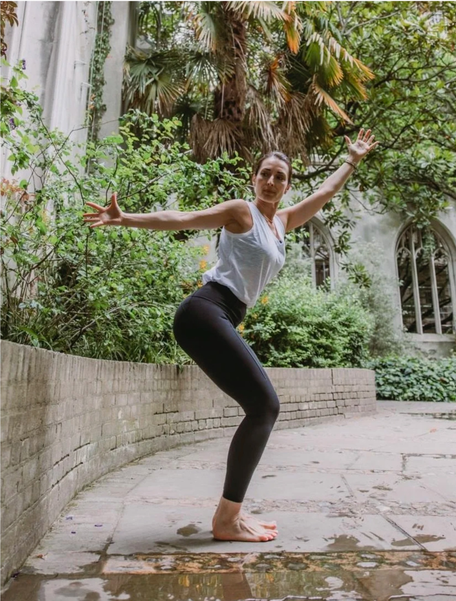

Yoga in Chiswick & West London
Private one to one sessions, small group classes at home, hybrid weekly classes and corporate yoga, taught by Sonia Lopez, a 500-hour Yoga Alliance registered teacher based in Chiswick.

Yoga that comes to you
Whether you would like a calm one to one practice at home, a private class for friends, or yoga for your team at work, I bring everything you need, mats and props included, to wherever suits you in West London.
- Private one to one yoga at home
- Small group classes for friends and family
- Beginners, injury recovery and deepening your practice
- Vinyasa, Yin, Yoga Nidra, meditation and breathwork
- Corporate yoga for offices in West London and the City
Yoga across West London
In person within about 7 miles of Chiswick, W4 1LB. Not on the list? Ask, I may still be able to come to you.
Yoga in Chiswick & Turnham Green
My home neighbourhood. Private sessions in your home, garden or a local venue, and easy access to the weekly hybrid classes.
Enquire →Yoga in Acton & Ealing
A few minutes from Chiswick. One to one and small group sessions at home, plus corporate classes for local workplaces.
Enquire →Yoga in Hammersmith & Shepherd's Bush
Private sessions at home or in a chosen space, and lunchtime or after-work corporate yoga for offices nearby.
Enquire →Yoga in Brentford, Kew & Richmond
Calm, green corners of West London. Private sessions, and small group classes for friends and family at home.
Enquire →Yoga in Barnes, Putney & Fulham
Across the river. One to one yoga at home, Yin and Yoga Nidra for deep rest, and private group sessions.
Enquire →Yoga in Kensington, Holland Park & Notting Hill
Private and small group yoga in your home or a chosen venue, tailored to your goals and schedule.
Enquire →Yoga in West London, your questions
Where are you based?
I am based in Chiswick, W4, and teach in person across West London, within about 7 miles. That includes Acton, Ealing, Hammersmith, Shepherd's Bush, Brentford, Kew, Richmond, Barnes, Putney, Fulham, Kensington, Holland Park and Notting Hill.
Can you come to my home?
Yes. Private sessions take place in the privacy of your own home, garden or a venue of your choosing, one to one or for a small group of friends and family. Pricing depends on the session, so please get in touch to arrange a time and place.
Do you teach beginners?
Yes. Every class and private session is suitable for all levels. You do not need to be flexible to start, yoga is what builds flexibility.
Do you offer corporate yoga in London?
Yes. I run bespoke corporate yoga and wellness sessions for teams across West London and the City, on-site, virtual or hybrid. Start with a free 15-minute discovery call.
What if I live outside West London?
You can join my live online classes from anywhere. The Tuesday Yogasana, Sunday Yang and Yin and weekday Morning Meditations are all streamed live.
Prefer to practise from home? See live online yoga classes.